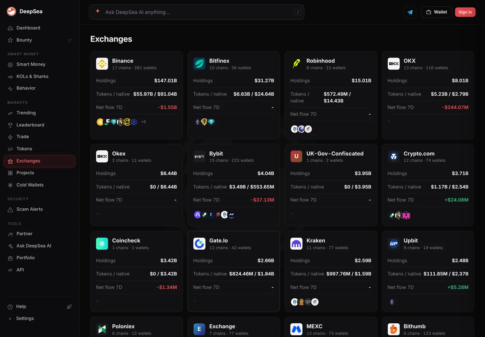
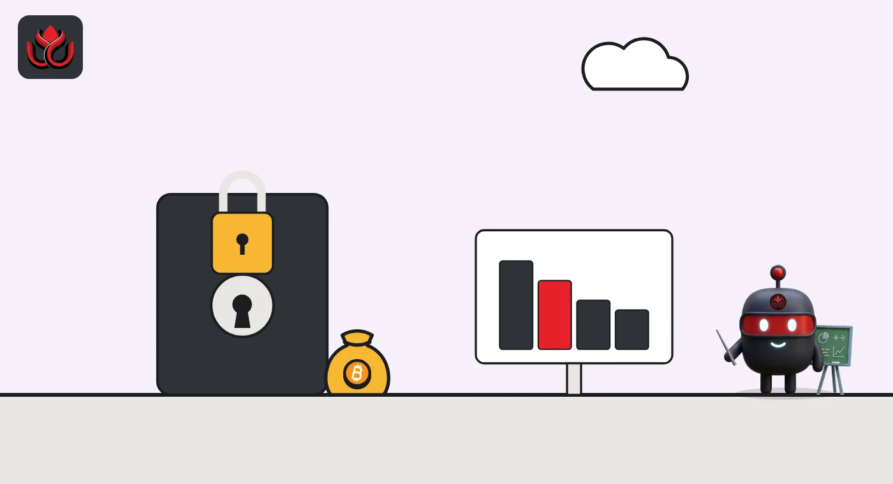

Seized UK government wallets rank seventh on DeepSea's exchange list, at $3.95 billion
DeepSea's exchange rankings mix trading venues with seized and long-silent wallets, including $574.14 million in failed QuadrigaCX's. Bitfinex ranks second at $31.27 billion, and one Coincheck wallet holds $3.42 billion.
Key points
- Two wallets DeepSea labels UK-Gov-Confiscated held $3.95 billion on November 5, 2026, ranking seventh on its exchange list, just behind Bybit.
- Two QuadrigaCX wallets held $574.14 million, more than DeepSea's KuCoin or Coinbase totals. Canada's securities regulator found the exchange collapsed due to fraud.
- Bitfinex was second only to Binance at $31.27 billion, and a single Coincheck wallet held $3.42 billion.
 What DeepSea's data shows
What DeepSea's data shows
DeepSea's Exchanges page adds up the balances of wallets it has labeled with a company or owner name. It splits each total into tokens and native coins (the chain's own coin, such as bitcoin on Bitcoin). We read it at 6:31 a.m. ET on November 5, 2026.
- Bitfinex: $31.27 billion in 36 wallets on 10 chains ($24.64 billion native), second behind Binance's $147.01 billion
- UK-Gov-Confiscated: $3.95 billion in 2 wallets on 1 chain, all native coins
- Coincheck: $3.42 billion in 1 wallet on 1 chain, all native, with a 7-day net flow of minus $1.34 million
- QuadrigaCX: $574.14 million in 2 wallets on 1 chain, all native
DeepSea shows no 7-day flow for the UK, QuadrigaCX or Bitfinex entries.

Data: DeepSea (desea.io), checked November 5, 2026, 6:31 a.m. ET.
Not every name is a trading venue
The list ranks wallets by owner, so it also catches coins held by governments and by firms that no longer trade. The UK-Gov-Confiscated entry, at $3.95 billion, sits between Bybit ($4.04 billion) and Crypto.com ($3.71 billion).
DeepSea's label does not name a case. The largest UK seizure on public record is the one the Metropolitan Police described on September 29, 2025: 61,000 bitcoin taken from Zhimin Qian. The Crown Prosecution Service said on November 11, 2025 that it would pursue criminal confiscation and civil proceedings over the assets. We cannot confirm from DeepSea's data that these are the same coins.
Selected holdings on DeepSea's exchange list
US$ billion
November 5, 2026, 6:31 a.m. ET. Source: DeepSea Exchanges page.
QuadrigaCX and Coincheck
QuadrigaCX was a Canadian exchange. The Ontario Securities Commission staff found it collapsed due to a fraud by co-founder and CEO Gerald Cotten, with about 76,000 investors losing at least $169 million. DeepSea still counts $574.14 million in two wallets under the QuadrigaCX label, with no recent flow shown. DeepSea does not say who controls them today.
Coincheck, a Japanese exchange, shows one wallet with $3.42 billion. That makes it one of the largest single-wallet balances on the page, ahead of Kraken's 77 wallets ($2.59 billion).

Why it matters
Exchange rankings built from on-chain labels show where coins sit, not who can spend them. Seized and dormant coins can look like exchange reserves. If they move, the flow tables will show it.
LC Insight analysis
This section is our reading of the facts above, not a statement of fact.
- We think the UK entry deserves the closest watch. A government sale or transfer of $3.95 billion of coins would be one of the largest single flows on the page.
- QuadrigaCX's wallets are a reminder that labels outlive companies. A balance under a dead exchange's name tells you nothing about who owns the coins now.
- Coincheck keeping $3.42 billion in one wallet is a storage choice, likely a cold wallet, but DeepSea's data does not say so.
What's next
- Any movement from the UK-Gov-Confiscated wallets
- Outflows from the QuadrigaCX-labeled wallets
- Coincheck's 7-day flow
Disclaimer. This article is based on public information and the sources listed below as of the update time shown. It is for information only and is not investment, legal or tax advice. Figures may change as companies and authorities publish new data.
Sources
- DeepSea, Exchanges page (read November 5, 2026, 6:31 a.m. ET)
- Metropolitan Police, Two people convicted following world's largest crypto seizure (September 29, 2025)
- Crown Prosecution Service, Two people imprisoned for their key roles in a largescale money laundering case (November 11, 2025)
- Ontario Securities Commission, OSC publishes investigative report of QuadrigaCX